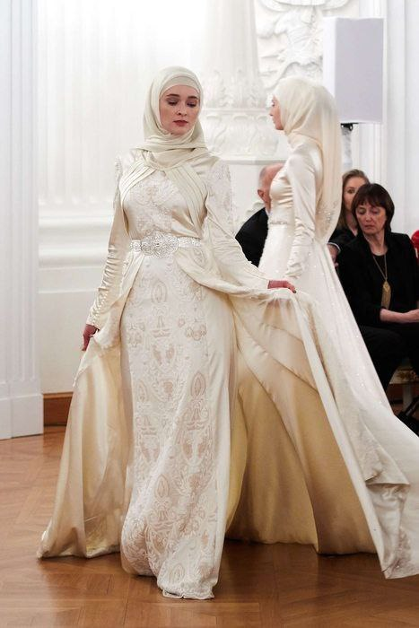 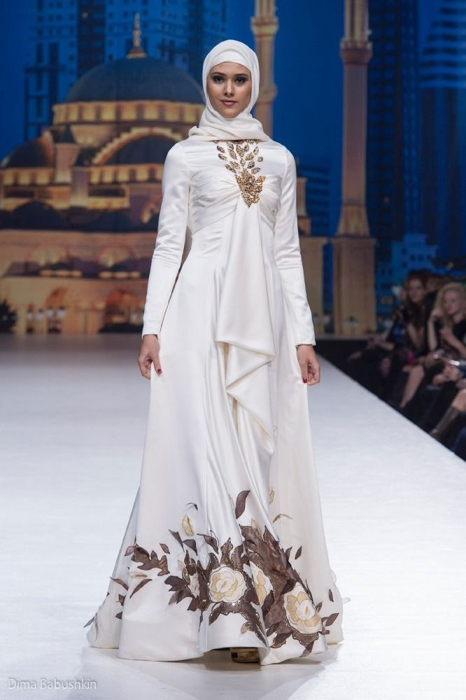
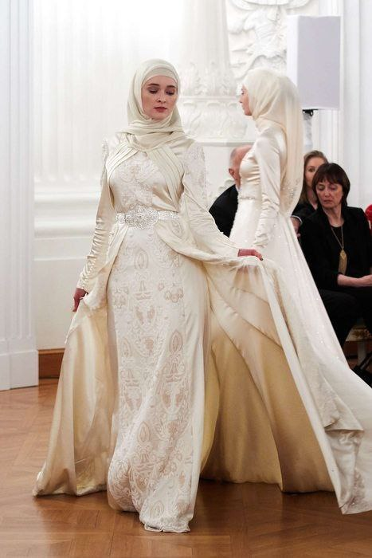 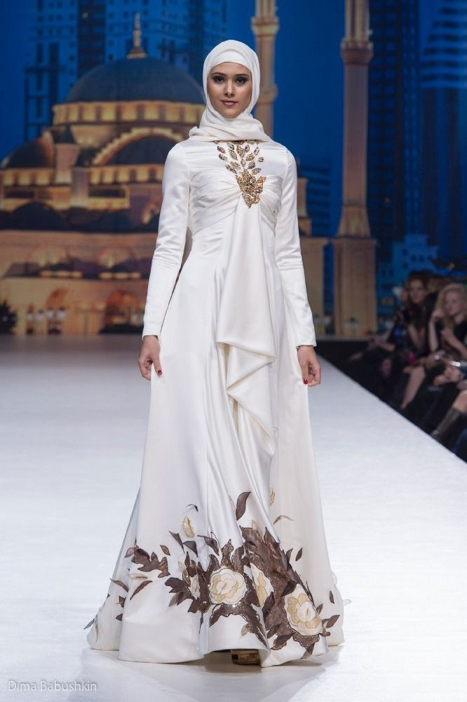 Дом моды Firdaws был основан женой главы Чечни Медни Кадыровой в 2009 году. На его открытие приезжали кутюрье Вячеслав Зайцев и Роберто Кавалли, которые — по информации официального сайта бренда — «предсказали большое будущее чеченской моде». Название Firdaws на арабском означает «высочайший из садов в раю», логотип компании — райская птица, изображенная на ранних письменах арабской каллиграфии. Коллекции Firdaws создаются группой дизайнеров, уроженцев Чечни, свои идеи они «черпают из истории вайнахского национального костюма и мудрости высказываний Корана». Коллекции модного дома выходили под названиями: «Цветы императора», «Ты в раю», «Тысяча и одна ночь», «Леди Чечня» и другие. Модный дом регулярно участвует в московской неделе моды, в 2012 году состоялся первый показ марки за пределами России — в Дубае, купить наряды бренда можно в бутике в центре Грозного площадью 1479 квадратных метров. Информация о стоимости платьев на официальном сайте марке отсутствует, в 2012 году телеканал «Дождь» выяснил, что самый скромный наряд стоил тогда, еще до обвала курса, около 150 тысяч рублей. Магазины Firdaws есть и в некоторых странах Ближнего Востока, в том числе в ОАЭ. Кроме основной — женской линии — Firdaws занимается мужской и детской модой. 8 марта 2016 года Дом моды возглавила дочь Рамзана Казырова — 18-летняя Айшат.
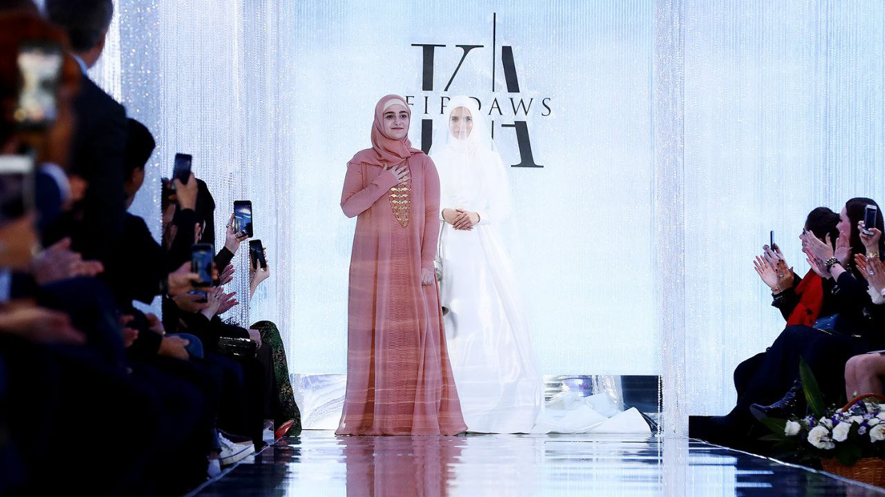
На показ съехались десятки знаменитых гостей из Москвы. В организации дефиле принимала участие продюсер Яна Рудковская, она писала об этом у себя в инстаграме. Также среди гостей вечера были олимпийская чемпионка, супруга пресс-секретаря президента России Дмитрия Пескова Татьяна Навка, главный редактор Hello Светлана Бондарчук, главный редактор Tatler Ксения Соловьева, главный редактор Harperʼs Bazaar Даша Веледеева, а также рэпер Тимати, телеведущая Ольга Бузова, фигурист Евгений Плющенко, певица Нюша и другие. Кроме московских знаменитостей, в зале присутствовали также итальянский модельер Стефано Риччи с семьей и вице-президент Chopard Каролина Груози-Шойфеле
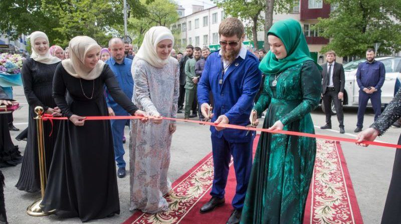
Комментировать свою поездку в Чечню персонажи светской хроники отказались. Ксения Соловьева сказала, что «не сможет высказаться» о дефиле в Грозном, Яна Рудковская, сославшись на то, что название «Медуза» ей не знакомо, также отказалась от комментариев. Светлана Бондарчук попросила перезвонить позже, после чего, как и другие гости показа, была недоступна для комментариев.
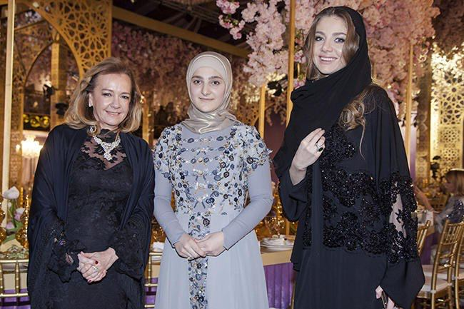
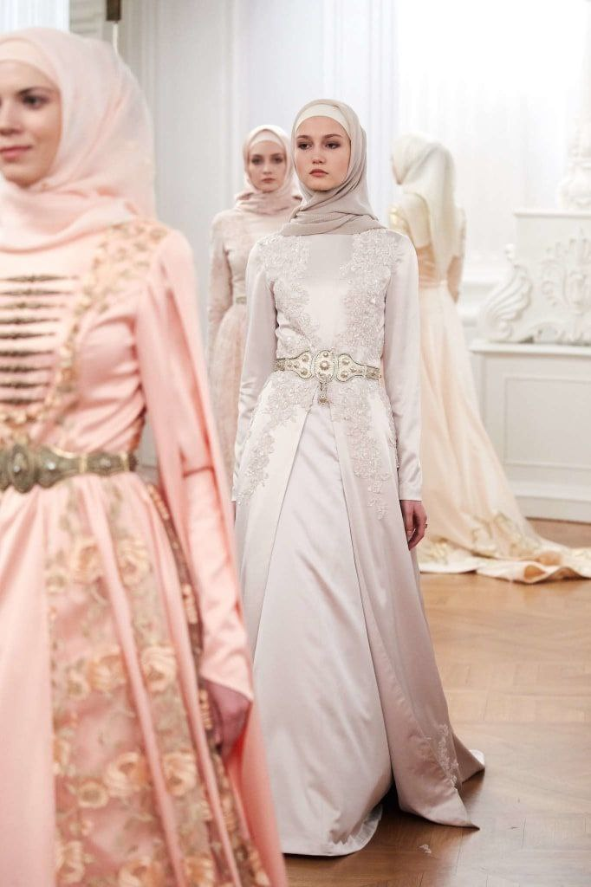 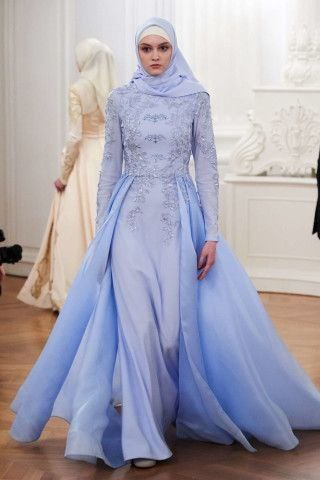 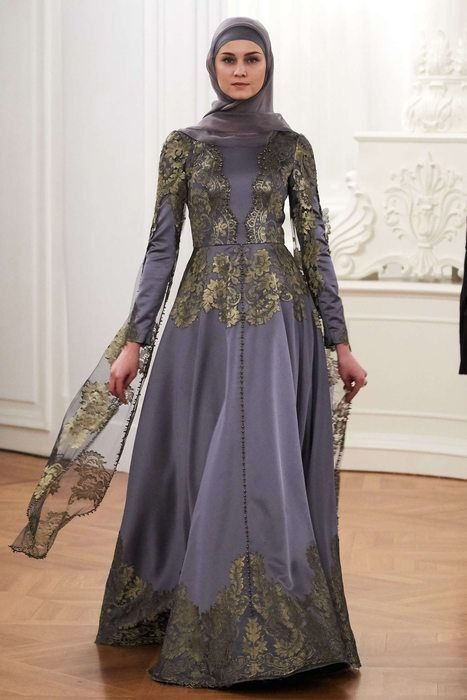
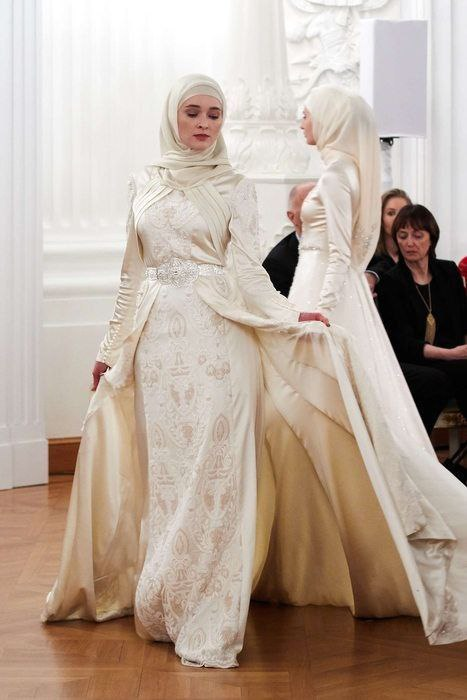 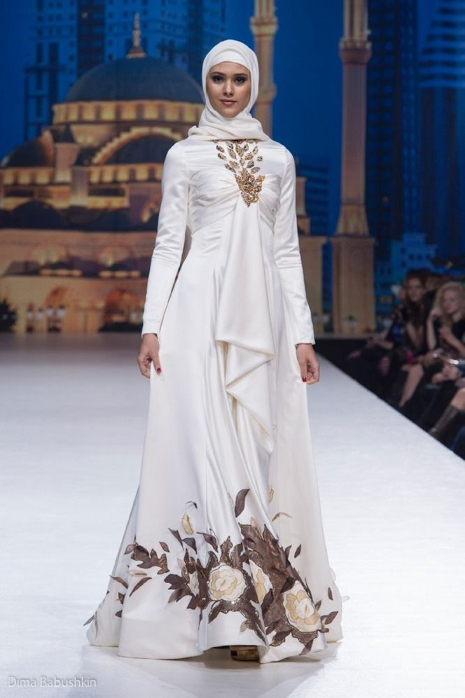
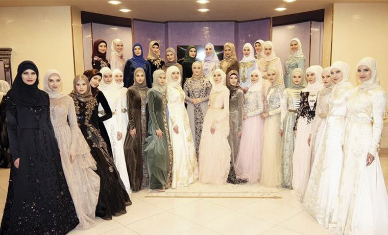